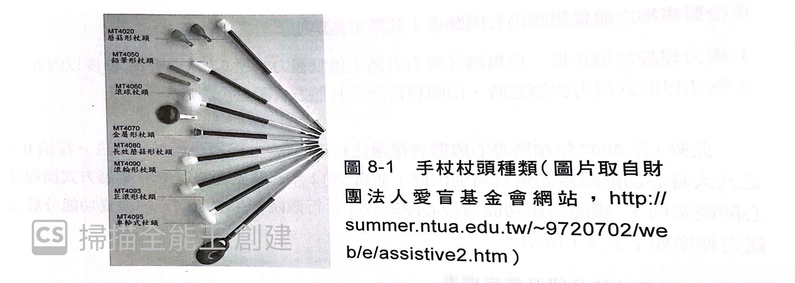

定向行動
定向行動(內容及影片)
定向行動
定向行動（Orientation and Mobility，縮寫 O&M），是一門有關如何協助視覺障礙者培養或重建其移動能力之專業，其功能在於訓練視覺障礙者透過感官知覺蒐集、判斷、選擇環境資訊，知道自身位置並計畫如何運用合適輔具及策略，以便安全、有效率地移動到目的地。
-
定向行動最常被連結於教導視障者使用白手杖。實際上，定向行動指導白手杖僅是其中一環，其他包括感官知覺訓練、建立對環境的心理地圖、人導法、徒手法、手杖技巧、路口/巷口定位及安全穿越、搭乘大眾交通運輸工具、尋求協助及與他人互動技巧等等。
持杖法
基本介紹
視障者使用手杖在現今是非常普及與普遍的，手杖除具備讓一般人辨識以外，也提供給視障者:
1.情報提供 2.安全提供
-
手杖對於視障者來說，會是上肢的延伸，藉此探索環境中獲取訊息。 因此，手杖的端點、傳導性、重量、耐性、長度等都會是影響持杖者的回饋與感受。
手杖種類簡介(手風琴頁)
種類簡介

請先觀看影片介紹
手杖頭總類
手杖杖頭常見會有磨菇頭、鉛筆頭、滾球頭等。 以初學者來說，會建議使用磨菇頭與鉛筆頭；手腕較無力與容易顫抖者，建議使用滾輪型
手杖長度選擇
手杖長度的選擇，大多都會以視障者本身的身高為基準來測量，大致上選擇會是:『手杖的長度大概從地板至視障者的胸部或胸部上方５公分內』都是理想長度。
小試身手
下列敘述正確請打O，錯誤請打X
( )手杖長度以持杖者的身高為基準
( )手杖長度以地板為基準，整體長度落在肩膀上下5公分是理想長度
( )手杖頭若是磨菇頭，鉛筆頭等總類，比較適合熟悉操作手杖之視障者來使用
持杖法簡介(測驗題+H5P)
持杖基本概念
持杖是定向行動內最重要的課程內容，以下從『握法』、『行進』做基本概念介紹。
閱讀活動
（１）握法：主要是用手掌心握住手杖的柄握，食指自然的順延手杖的側面向下伸展，大拇指與其他三指就像平常握手的方式合握杖柄。持杖者以手腕關節為支點，自然的左右點的方式擺動，避免以滾動的方式移動與操作。
（２）行進： 手杖以身體中心線（大概肚臍處）自然延伸手臂，此時手臂、手指、手杖會成一直線，保持步伐與手杖之間節奏一致。
是非題
請針對本章節持杖法簡介的內容，回答下列是非題。
回饋意見
錯誤
回饋意見
正確
回饋意見
正確
H5P測驗
定向行動小試身手
授權條款為 CC 授權 -- 相同方式分享條款 4.0 版